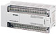
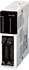

MELSEC-F series I/O Extension

FX series I/O extension devices are divided into "extension blocks" and "powered extension units".
"Powered extension units" have built-in power supply and also extend I/O at the same time.
"Extension blocks" adjust the I/O of the main unit or powered extension units in 8 point or 16 point units.
Extension units
Powered extension units are I/O extension devices with built-in power supply.
Like with the main unit, various I/O devices and special devices can be connected after a powered extension unit.
| Model | Total number of points |
Number of input/output points Input/output type |
Applicable FX PLC | |||||||||||||
|---|---|---|---|---|---|---|---|---|---|---|---|---|---|---|---|---|
| Input | Output | FX 3S |
FX 3G |
FX 3U |
FX 3GC |
FX 3UC |
||||||||||
| AC Power Type | ||||||||||||||||
| FX2N-32ER | 32 points | 16 points | 24 V DC (sink) |
16 points | Relay | × | ○ | ○ | × | × | ||||||
| FX2N-32ER-ES/UL | 24 V DC (sink/ source) |
|||||||||||||||
| FX2N-32ES | 24 V DC (sink) |
Triac | ||||||||||||||
| FX2N-32ET | 24 V DC (sink) |
Transistor (sink) |
||||||||||||||
| FX2N-32ET-ESS/UL | 24 V DC (sink/ source) |
Transistor (source) |
||||||||||||||
| FX2N-48ER | 48 points | 24 points | 24 V DC (sink) |
24 points | Relay | × | ○ | ○ | × | × | ||||||
| FX2N-48ER-ES/UL | 24V DC (sink/ source) |
|||||||||||||||
| FX2N-48ET | 24 V DC (sink) |
Transistor (sink) |
||||||||||||||
| FX2N-48ET-ESS/UL | 24 V DC (sink/ source) |
Transistor (source) |
||||||||||||||
|  | FX2N-48ER-UA1/UL | 48 points | 24 points | 100 V AC | 24 points | Relay | × | ○ | ○ | × | × | |||||
| DC Power Type | ||||||||||||||||
| FX2N-48ER-D | 48 points | 24 points | 24 V DC (sink) |
24 points | Relay | × | ○ | ○ | × | × | ||||||
| FX2N-48ER-DS | 24 V DC (sink/ source) |
|||||||||||||||
| FX2N-48ET-D | 24 V DC (sink) |
Transistor (sink) |
||||||||||||||
| FX2N-48ET-DSS | 24 V DC (sink/ source) |
Transistor (source) |
||||||||||||||
Regarding connection cable
A connection cable (length: 55 mm), used to connect to the the right side of the device in front of the powered extension unit, is included with the powered extension unit. To extend the distance of the connection, please use the optional "extension cable".
Function expansion board
The expansion board is designed to add the input and output terminal whose points are small to FX3S or FX3G PLCs. The board can be built in the PLC.
| Model | Total number of points |
Number of input/output points Input/output type |
Applicable FX PLC | |||||||||||||
|---|---|---|---|---|---|---|---|---|---|---|---|---|---|---|---|---|
| Input | Output | FX 3S |
FX 3G |
FX 3U |
FX 3GC |
FX 3UC |
||||||||||
| FX3G-4EX-BD | 4 points | 4 points | 24 V DC (sink/ source) |
- | - | *1 ○ Max. 1 unit |
*2 ○ Max. 1 unit |
× | × | × | ||||||
| FX3G-2EYT-BD | 2 points | - | - | 2 points | Transistor (sink/ source) |
*1 ○ Max. 1 unit |
*2 ○ Max. 1 unit |
× | × | × | ||||||
- *1Supported by FX3S ver. 1.10 and later.
- *2Supported by FX3G ver. 2.20 and later.
Extension blocks
Extension block is an I/O extension device that receives power from the main unit or powered extension unit.
It can be connected in 8 point or 16 point units. The connectable number of points is determined by each main unit or powered extension unit.
| Model | Total number of points |
Number of input/output points Input/output type |
Applicable FX PLC | |||||||||||||
|---|---|---|---|---|---|---|---|---|---|---|---|---|---|---|---|---|
| Input | Output | FX 3S |
FX 3G |
FX 3U |
FX 3GC |
FX 3UC |
||||||||||
| Input/output extension blocks | ||||||||||||||||
| FX2N-8ER | 8 points | 4 points (8 devices are occupied.) |
24 V DC (sink) |
4 points (8 devices are occupied.) |
Relay | × | ○ | ○ | *1 *2 ○ |
*1 *2 ○ |
||||||
| FX2N-8ER-ES/UL | 24V DC (sink/ source) |
|||||||||||||||
| FX2N-8EX | 8 points | 24 V DC (sink) |
- | - | ||||||||||||
| FX2N-8EX-ES/UL | 24V DC (sink/ source) |
|||||||||||||||
| FX2N-8EX-UA1/UL | 100 V AC | |||||||||||||||
| FX2N-16EX | 16 points | 16 points | 24 V DC (sink) |
× | ○ | ○ | *1 *2 ○ |
*1 *2 ○ |
||||||||
| FX2N-16EX-ES/UL | 24 V DC (sink/ source) |
|||||||||||||||
| FX2N-16EX-C Connector input |
24 V DC (sink) |
|||||||||||||||
| FX2N-16EXL-C Connector input |
5 V DC | |||||||||||||||
| Output extension blocks | ||||||||||||||||
| FX2N-8EYR | 8 points | - | - | 8 points | Relay | × | ○ | ○ | *1 *2 ○ |
*1 *2 ○ |
||||||
| FX2N-8EYR-ES/UL | ||||||||||||||||
| FX2N-8EYR-S-ES/UL | Relay (8 points/common) |
|||||||||||||||
| FX2N-8EYT | Transistor (sink) |
|||||||||||||||
| FX2N-8EYT-H | ||||||||||||||||
| FX2N-8EYT-ESS/UL | Transistor (source) |
|||||||||||||||
| FX2N-16EYR | 16 points | 16 points | Relay | × | ○ | ○ | *1 *2 ○ |
*1 *2 ○ |
||||||||
| FX2N-16EYR-ES/UL | ||||||||||||||||
| FX2N-16EYS | Triac | |||||||||||||||
| FX2N-16EYT | Transistor (sink) |
|||||||||||||||
| FX2N-16EYT-ESS/UL | Transistor (source) |
|||||||||||||||
| FX2N-16EYT-C Connector output |
Transistor (sink) |
|||||||||||||||
- *1For connection to FX3GC or FX3UC, FX2NC-CNV-IF or FX3UC-1PS-5V is required.
- *2Depending on the model name of the main unit, I/O extension device connection may or may not be allowed. For details, refer to the manual of the main unit.
Regarding connection cable
A connection cable, used to connect to the right side of the device in front of the extension block, is included with the extension block.
To extend the distance of the connection, please use the optional "extension cable (FX0N-30EC/FX0N-65EC)" and "connector conversion adapter (FX2N-CNV-BD)".
Extension block for connector type main unit (FX3GC, FX3UC)
These I/O extension devices can be directly connected to FX1NC, FX3GC, FX2NC, FX3UC PLCs.
They can be compactly extended because connection cables are not needed.
| Model | Total number of points |
Number of input/output points Input/output type |
Applicable FX PLC | |||||||||||||
|---|---|---|---|---|---|---|---|---|---|---|---|---|---|---|---|---|
| Input | Output | FX 3S |
FX 3G |
FX 3U |
FX 3GC |
FX 3UC |
||||||||||
| Input extension blocks | ||||||||||||||||
| FX2NC-16EX-T Terminal block input |
16 points | 16 points | 24 V DC (sink) |
- | - | × | × | × | * ○ |
* ○ |
||||||
| FX2NC-16EX-T-DS Terminal block input |
24V DC (sink/ source) |
|||||||||||||||
| FX2NC-16EX | 24V DC (sink) |
|||||||||||||||
| FX2NC-16EX-DS | 24V DC (sink/ source) |
|||||||||||||||
| FX2NC-16EX-D/UL | 24V DC (sink) |
|||||||||||||||
|  | FX2NC-32EX | 32 points | 32 points | 24 V DC (sink) |
||||||||||||
| FX2NC-32EX-DS | 24V DC (sink/ source) |
|||||||||||||||
| FX2NC-32EX-D/UL | 24V DC (sink) |
|||||||||||||||
| Output extension blocks | ||||||||||||||||
| FX2NC-16EYR-T Terminal block Output |
16 points | - | - | 16 points | Relay | × | × | × | * ○ |
* ○ |
||||||
| FX2NC-16EYR-T-DS Terminal block output |
||||||||||||||||
| FX2NC-16EYT | Transistor (sink) |
|||||||||||||||
| FX2NC-16EYT-DSS | Transistor (source) |
|||||||||||||||
| FX2NC-16EYT-D/UL | Transistor (sink) |
|||||||||||||||
| FX2NC-32EYT | 32 points | 32 points | Transistor (sink) |
|||||||||||||
| FX2NC-32EYT-DSS | Transistor (source) |
|||||||||||||||
| FX2NC-32EYT-D/UL | Transistor (sink) |
|||||||||||||||
| Input/output extension blocks | ||||||||||||||||
| FX2NC-64ET | 64 points | 32 points | 24 V DC (sink) |
32 points | Transistor (sink) |
× | × | × | * ○ |
* ○ |
||||||
- *Depending on the model name of the main unit, I/O extension device connection may or may not be allowed. For details, refer to the manual of the main unit.